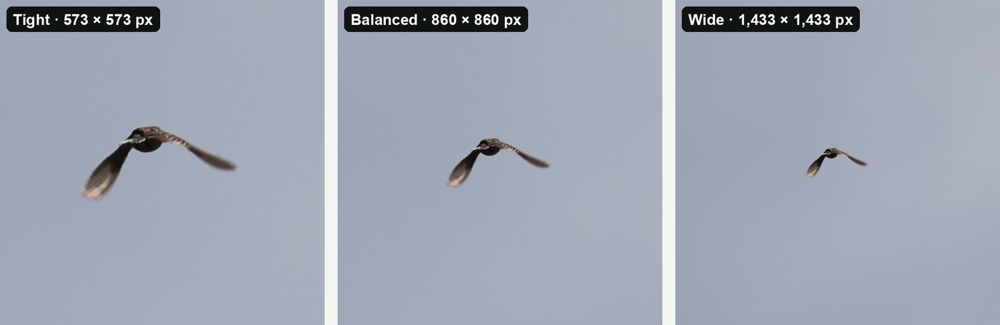

Guides · Updated 27 October 2026
How to crop bird photos
Most bird photos are taken from too far away, so almost every keeper needs a crop. A good crop does three things: it makes the bird the subject, it gives the bird a little room, and it keeps as much real detail as the photo has.
Short answer: crop the full-size original, let the bird fill about a third of the frame, leave more space in front of the bird than behind it, keep the horizon level, and don't cut through feet, tail or wing tips. If you have hundreds of photos from one outing, crop them in one go and fine-tune only your favourites.
1. Decide how much space to leave
The biggest choice is how large the bird should be in the frame. There is no single right answer, but three amounts cover almost every photo.

- Tight (bird fills about half the frame). Best for plumage detail and for the first photo of an iNaturalist observation. For eBird, Balanced leaves the "canvas" eBird asks for. Watch that the tail and feet stay inside the frame.
- Balanced (about a third). A good default for most perched birds. There is room to see the perch and a little of the setting.
- Wide (about a fifth). For birds in a landscape: a wader on a mudflat, a raptor against the sky, a bird in its habitat. The surroundings become part of the picture.
These are the same three framings BirdFrame uses, so a whole folder can be cropped to one consistent look.
2. Place the bird
- Give it room to look into. If the bird faces or flies to the left, leave more space on the left. A bird pressed against the edge it's facing looks cramped.
- Thirds, or the centre. Placing the eye near a third of the frame suits birds side-on. A bird facing you, a symmetrical pose or a record shot often looks best centred.
- Keep the whole bird. Don't cut through the feet, tail tip or wing tips. If something has to go, crop the perch rather than the bird.
- Level the horizon. Water and distant horizons show even a small tilt. Straighten first, then crop.
- Mind the edges. A bright branch or half a second bird at the edge pulls the eye away. Nudge the crop to leave them out.

3. Choose a shape
| Shape | Good for |
|---|---|
| 1:1 square | Identification uploads, contact sheets, Instagram posts. Works for almost any pose. |
| 4:3 | Screens and slideshows; the shape of most phone and Micro Four Thirds photos. |
| 3:2 | Prints and the native shape of most full-frame and APS-C cameras. |
| 16:9 | Birds in a wide landscape, desktop wallpapers, video. |
Keep one shape for a set you'll show together, such as a club slideshow or a photo book. It looks tidier than a mix.
4. How far can you crop?
Cropping never makes the pixels you keep worse. It only leaves fewer of them. What matters is how many remain for what you want to do.
| Bird's length in the original | Tight crop | Balanced crop | Wide crop |
|---|---|---|---|
| 300 px (a small, distant bird) | 600 × 600 | 900 × 900 | 1,500 × 1,500 |
| 600 px | 1,200 × 1,200 | 1,800 × 1,800 | 3,000 × 3,000 |
| 1,000 px | 2,000 × 2,000 | 3,000 × 3,000 | 5,000 × 5,000* |
Square crops; the side is the bird's longer dimension × 2, 3 or 5. *A crop can't be larger than the photo, so on a 24-megapixel (6,000 × 4,000) photo the biggest square is 4,000 × 4,000.
- Screens and sharing: about 2,000 pixels on the long side is plenty. iNaturalist, for example, stores photos at up to 2,048 pixels.
- Prints: at 300 dpi, an 8 × 10 inch print needs about 2,400 × 3,000 pixels. Many prints still look good at 200 dpi.
- Record shots: even a few hundred pixels can be enough to identify a bird, as long as it's sharp.
A 24-megapixel photo is 6,000 × 4,000 pixels, and a 45-megapixel one about 8,200 × 5,500. So a bird that looks tiny on the back of the camera often still gives a usable crop.
5. Crop the original, not a copy
The most common way to lose detail isn't the crop itself. It's cropping a smaller export, a screenshot or a phone-sized copy instead of the original file. Crop the full-size JPEG, HEIC or RAW straight from the camera, and resize only at the very end, for the place you're posting it.

6. Cropping a whole outing
Doing this by hand is fine for a few photos. After a good morning with a long lens it's hundreds of frames, and the bird is somewhere different in every one, so a batch tool that applies the same crop box to every photo doesn't help.
BirdFrame is a Mac app built for exactly this. Point it at an Apple Photos album or a folder of JPEG, HEIC or RAW files, pick Tight, Balanced or Wide and a shape, and it finds the bird in every photo, including small, distant and half-hidden ones, and crops each one in one go. Each crop is cut from the full-size original, with no downscaling and nothing generated. A good workflow is to let it crop the whole set, then hand-tune the handful you'll print or enter in a competition.
More detail: how to batch crop bird photos on a Mac.
Questions
How much space should I leave around a bird?
For most photos, let the bird fill about a third of the frame's width. Go tighter (about half) for plumage detail, and wider (about a fifth) when the setting tells the story, such as a heron on open water.
Should the bird be in the centre or on a third?
Put a bird that is looking or moving sideways slightly off centre, with more space in front of it than behind. A bird facing the camera, a symmetrical pose or an identification shot often works best centred.
Does cropping reduce quality?
Cropping removes pixels around the bird and keeps the rest at full size, as long as you crop the full-size original. Quality drops only if you crop a downscaled copy or enlarge the crop afterwards.
How many pixels do I need after cropping?
About 2,000 pixels on the long side is plenty for screens and online sharing. A 300 dpi print at 8 × 10 inches needs about 2,400 × 3,000 pixels.
Crop every bird in one go, at full resolution. BirdFrame finds the birds in a whole album or folder and crops each one from the full-size original. Free for up to 50 photos per run.